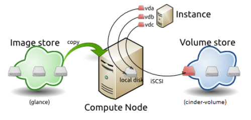

Before You Install
Before you can start working in the HP Cloud OS Operational Dashboard, you must:
- Plan the Infrastructure for a Cloud
- Set up the Admin Node
- Boot the Admin Node Using the HP Cloud OS ISO
- Launch the Operational Dashboard
Plan the Infrastructure for a Cloud
For the simplest deployment, a cloud environment requires a Cloud Administration Node (Admin Node), a Cloud Controller Node, and a set of Compute Node(s). You may need support from your IT Administrator to correctly capture information about your environment.
You need to determine the type of cloud you want to create for your organization: private, public, or hybrid. With HP Cloud OS, you can create private or hybrid clouds. You can create public clouds with HP Public Cloud. See the Introduction to Cloud Types.
Based on the type of cloud you intend to create, you can determine the requirements for the server, network, and storage infrastructures that are described and illustrated in the following sections:
Server Infrastructure
The following table identifies server requirements for your cloud environment.
| Node Type | Virtual/Physical Node | CPU Cores | Memory | Internal Storage | NICs | |
|---|---|---|---|---|---|---|
| Admin Node | Virtual Only | 4 * | 16 GB * | 20 GB | 2 | |
| Controller Node | Virtual and Physical | 4 | 32 GB | 60 GB | 1 ** | Ubuntu Server 12.04 LTS (64-bit) |
| Compute Node | Physical Only | 4 *** | 32 GB | 60 GB | 1 | Ubuntu Server running KVM hypervisor 12.04 LTS (64-bit) |
| Swift Controller (Ring, Proxy, Dispersion) | Virtual or Physical | 8 | 12 GB | 20 GB | 3 | Ubuntu Server 12.04 LTS (64-bit) |
| Storage Node | Virtual or Physical | 8 | 12 GB | 60 GB | 3 | Ubuntu Server 12.04 LTS (64-bit) |
* For the Admin Node, the CPU and memory should be dedicated to this VM and not shared with other virtual machines on the same KVM host.
** External Internet connection required for public or hybrid cloud.
*** Intel or AMD hardware virtualization support required. The CPU cores and memory requirements must be sized based on the VM instances hosted by the compute node.
Network Infrastructure
To plan the Cloud Environment's network infrastructure, see the following sections:
Switch Configuration
Your environment must provide physical switches and wiring for 3 to 4 networks, depending on the cloud configuration. Or the environment must support the 802.1Q specification (VLAN tagging/trunking) for tagged networks.
Network Configuration
The following table identifies network requirements for your cloud environment.
| Network | Speed | |
Required | Notes |
|---|---|---|---|---|
| admin Network | 1 Gb | N | Y | Used for administrative functions, such as managed node installation, TFTP booting, DHCP assignments, system logs, backups, and other monitoring tasks. This also carries cinder-volume traffic. Must be an Isolated Private Network. |
| bmc Network * | 1 Gb | N | N | Baseboard Management Controller LAN for Intelligent Platform Management Interface (IPMI) traffic. For test purposes only. |
| bmc_vlan Network | 1 Gb | Y (100) | N | Baseboard Management Controller VLAN (IPMI traffic VLAN). For test purposes only. |
| os_sdn Network | 1 Gb | Y (700) or N. Default is N (not tagged). | Y | OpenStack Software-Defined-Network. This network is for data traffic between the Virtual Machine instances, and the traffic from the instances to the Controller Node. Must be an isolated Private Network. |
| public Network | 1 Gb | Y (300) or N. Default is N (not tagged). | Y | Public or corporate network that is attached to your cloud infrastructure. Must provide a pool of IP addresses for the Cloud Controller node for floating IP assignments. Size of the pool depends on the number of Virtual Machine instances. This network handles traffic to the outside world for the instances. |
* Default configuration of network tagging to combine logical networks onto a single physical network. Recommended practice is to use a separate Network for each type of network instead of VLAN. See Customize Network Settings (Required) for instructions on customizing the os_sdn, public and admin networks.
Storage Infrastructure
The following table identifies storage requirements for your cloud environment.
| Node Type | Internal Storage | Partition Scheme | File System Mounts | Notes |
|---|---|---|---|---|
| Admin node | |
|||
| Controller node | >= 60 GB | Block storage | /var/lib/glance/images: >= 300 GB LVM Volume Group: >= 2 TB, **or** /var/lib/cinder/volumes: >= 2 TB |
|
| Compute node(s) | >= 60 GB | Block storage | /tmp: >= 150 GB /var/lib/nova/instances: >= 300 GB |
The compute node(s) need storage space for on-instance, ephemeral disks. The sizing is based on the flavor chosen for the launched instances. |
This illustration shows how the storage space is used by the VM instances in a cloud's infrastructure:

Set Up the Admin Node
You are recommended to only install the Admin Node on a virtual machine. Here are general guidelines for creating a virtual machine in an existing or new hypervisor infrastructure:
Configure the hypervisor host's network. The host must provide connectivity to the virtual machine Admin Node on an isolated private network to all the baremetal nodes' port eth0. And the virtual machine Admin Node must also have connectivity to a routable network for Internet access.
Create a virtual machine Admin Node with the hardware configuration suggested in the previous section, Plan the Infrastructure for a Cloud. The following configuration must be reviewed during this step:
a. Ensure the virtual machine Admin Node's primary NIC is bridged or connected to the admin network and the second NIC is bridged or connected to a routable network for Internet access.
b. For the disk configuration, the default Disk bus type/controller uses proprietary technology. Ensure you set that to the IDE/SCSI type.
c. If your hypervisor is KVM, ensure the virt type is set to KVM.
Download the HP Cloud OS ISO to the host's local file system or data store.
Configure the virtual machine Admin Node to point to the ISO as a CD/DVD drive or install media ISO image.
Boot the Admin Node Using the HP Cloud OS ISO
To boot the Admin Node using the ISO:
Power ON the virtual machine Admin Node and open up its console.
In the console window, you can view the boot up process. Once completed, a login prompt displays.
(Optional) Power DOWN the Admin Node VM, edit it to disconnect the ISO CD, then Power UP the VM.
The Operational Dashboard has been successfully installed on the Admin Node.
Launch the Operational Dashboard
After you boot from the HP Cloud OS ISO, you are ready to launch the Operational Dashboard to set up the Admin Node.
To launch the Operational Dashboard:
From the virtual machine Admin Node, open a Mozilla Firefox or Google Chrome browser that has the following IP addresses set as proxy exceptions:
10.*;192.*;localhost;127.*
In the browser, enter http://192.168.124.10:9000 to launch the Operational Dashboard user interface. IMPORTANT: Use Google Chrome or Mozilla Firefox.
On the Environment tab, review the types of prerequisites, servers, connections, and networks in your environment.
Next Step
Proceed to the next topic, Set the Admin Node Prerequisites, to begin the process of setting up and installing the Admin node.